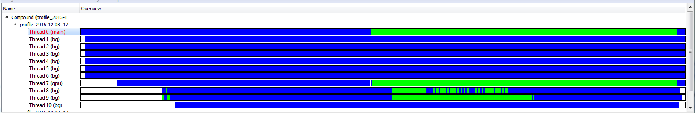
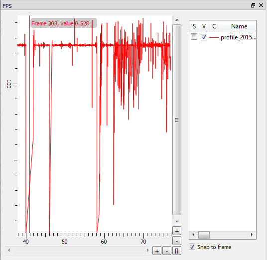
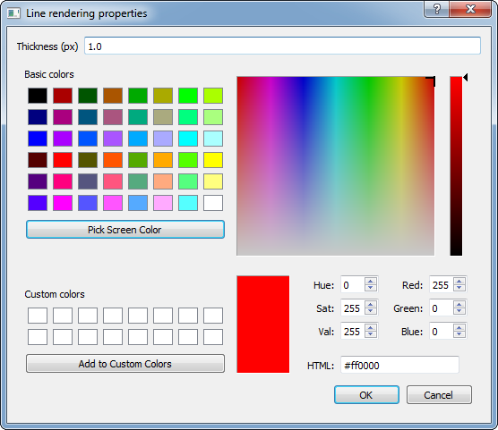
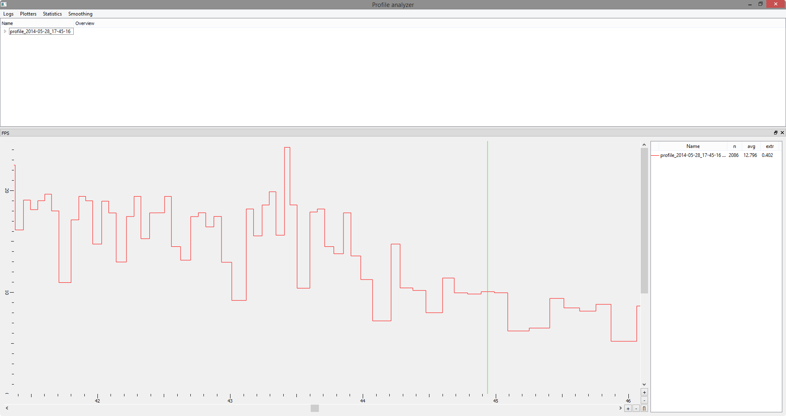
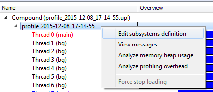
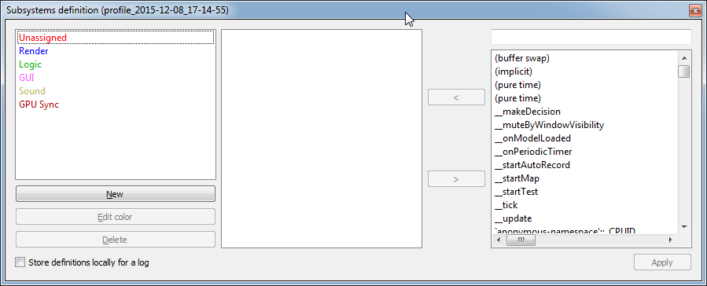
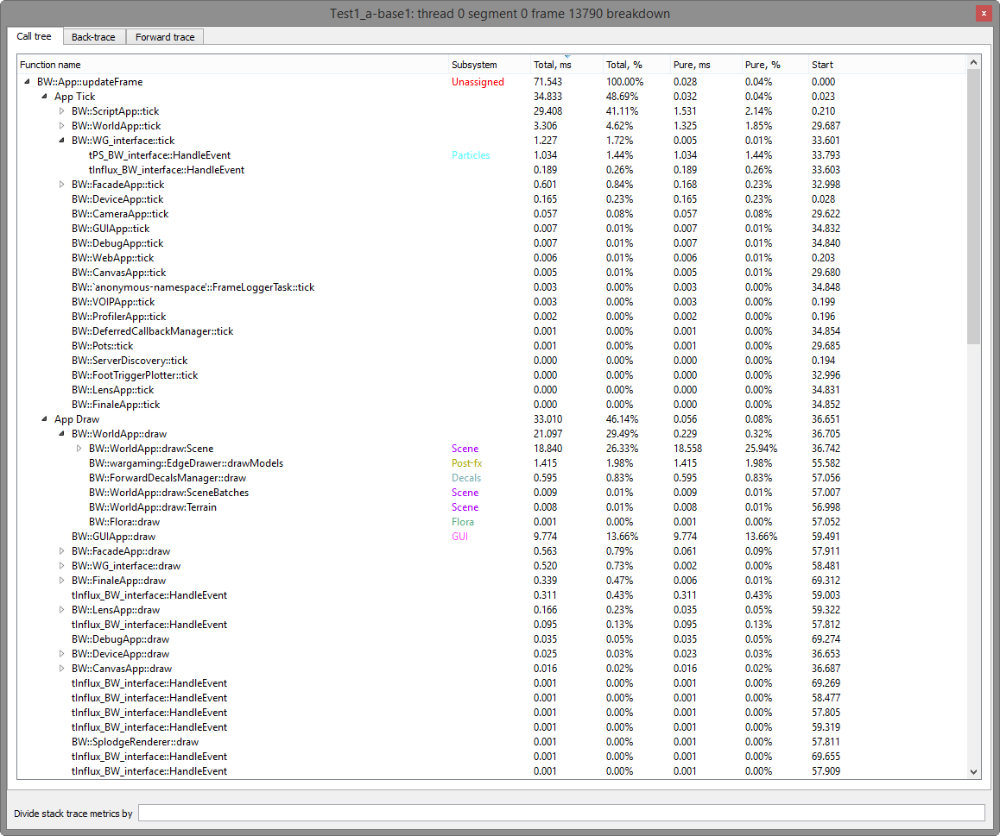

Profile Analyzer¶
Introduction¶
Profile Analyzer is a separate application stored in game/tankfield/tools/profile_analyzer. All the necessary Qt libraries can be found there too.
{kind=link}
Starting Profile Analyzer¶
When launched without arguments, Profile Analyzer will work in GUI mode. GUI mode helps to find and thoroughly scan bottlenecks in the client’s work. To start profiling, open a log file by clicking Logs > Open log, or by using the Ctrl+O shortcut, and selecting a log file.
Note: Uploading and processing log files can take a long time; therefore, it is better to open logs one by one.
Analyzing Logs¶
The opened log (or logs) will appear in the table at the top of the window; the analysis will be launched in the background thread. You can analyze full logs as well as those written by the working client. This enables you to track the impact of disabling the subsystems.
The top part of the main analyzer window (the log pane) contains a tree-view table with general information on the opened logs. Each line corresponds to one log. Logs can be expanded to display a list of logged threads. In some cases, lines corresponding to threads contain subelements.
{kind=link}
To interact with this table, right-click and select an action from the context menu.
Each thread has a type (indicated in brackets after the thread number). The thread types are:
- main – the main application thread and usually the most interesting one
- bg – background threads that work with asynchronous resource loading, etc.
- gpu – virtual thread that contains events from the video controller
- memory – supplementary thread that logs memory allocations and deallocations created by non-profiled threads (Umbra, Scaleform, etc.)
The lifecycle of most threads consists of the initialization (startup), “effective job” execution, and finalization (shutdown). An “effective job” in this case is when a recurrent task is performed. An example of a task is the uploading of a resource. Such a task is called a frame. Some threads are not divided into phases and can only be analyzed as a whole.
The stages of the thread’s lifecycle are visually displayed next to the name of the thread. Stages where there’s no thread (or it is not profiled) are marked in white. Lifecycles are marked in other colors—refer to the keys in the tooltip.
FPS Graph¶
{kind=link}
The FPS graph, located in the bottom left corner of the window, is a visual representation of the uploaded logging data. The keys for color, corresponding log/thread names, and statistics are placed to the right of the chart.
The X axis represents the client operation time (replay time) in seconds, and the Y axis represents instant FPS (reverse frame interval). The zero point is set as the moment of the scene startup to make it easier to compare replays.
Graph controls:
| Function | Shortcut |
|---|---|
| Hold mouse button | Move displayed data area |
| Shift + click | Place a vertical mark (repeating the action at the same point will remove the mark) |
| Shift + hold mouse button | Region selection (the vertical mark described above is a particular case of a selected region with zero width) |
| Mouse scroll | Horizontal zoom around the center of the selected region or of the visible region (when a region is not selected) |
| Shift + mouse scroll | Vertical zoom around the lower bound of the visible region |
| Right click | Context menu (see Context menu entries below) |
| Scrollbars and “+/-” buttons at the bottom right of the graph | Alternative options for moving and zooming the displayed data region |
| [] button in the bottom left corner of the graph | Make the displayed data region equal to the region of all data |
Note: Region selection (Shift+Click) is useful for selecting a section to zoom in. The statistics to the right of the graph are calculated for the selected region (or for all data with a positive X value, if there’s no selected region).
{kind=link}
Interpolation settings¶
There are three types of smoothing: No interpolation, Linear interpolation, and Bezier interpolation. These affect the visual representation of the smoothed graph, and do not affect the average FPS rate. The variant with no interpolation is more detailed (frame borders are clearer); the variant with linear interpolation is more commonly used. Note that each point in this mode indicates the beginning of a frame.
To change the interpolation setting of the graph, right-click the graph and select the desired setting in the context menu.
Changing the Graph Color¶
To change the graph color and line thickness, click the line in the “C” column of the table to the right of the graph. A color picker appears, allowing you to change the color and line thickness.
{kind=link}
Docking and Undocking the FPS Graph¶
The FPS graph can be undocked. Click the Close button to hide it; click the Plotters command in the main window menu to open it.
Graph Smoothing¶
To reduce the visual noise of the graph, you can use Smoothing. Graph smoothing can help produce more readable graphs to indicate trends, at the expense of precision.
To enable Smoothing, select the desired setting from the Smoothing menu. The width of the smoothing windows can be adjusted there (0, 2, or 5 seconds). Changing the Smoothing setting may alter the average FPS for the graph. The average FPS is most precise when Smoothing equals 0 sec. However, if the value is 0, the graph is the least clear and is appropriate only for a detailed analysis of separate frames.
The image below shows a zoomed section of the graph where smoothing is set to 0:
{kind=link}
To remove a log that is no longer required, right-click and select Unload log.
.fps files¶
An .fps file is used for visually comparing graphs and processing several indicators (e.g. number of frames, average FPS, minimum FPS). You can upload .fps files and display them on the graph together with .upl files.
To upload an .fps file, click Logs > Open FPS file.
FrameTime Graphs¶
The FrameTime graph is placed next to the FPS graph by default. Frametime (frame intervals) of different threads can be displayed there. Unlike in the FPS graph, the Y axis here represents the timeline in milliseconds.
If needed, additional graphs can be created through Plotters > Create new overview.
To add or remove frametimes for a particular thread:
- Expand the log in the log pane, and right-click the thread line.
- In the context menu, select the option for the desired overview graph. For example, to display a thread on the Overview 1 graph, choose “Overview 1” from the menu.
Besides frametimes, this graph can display time taken to perform separate functions in each frame (see Stack Watch below for details).
Analyzing GPU functions¶
To analyze functions performed by GPU, enable the UNIPROF_INCLUDE_GPU system variable before writing the log. After uploading the log to Profile Analyzer, expand the necessary log, select Thread # (gpu), right-click it and select Overview 1.
To view Overview 1, enable it in the Plotters menu (other Overviews can also be created there). Only data on the GPU thread will be displayed.
Analysis of the Time Taken by Subsystems Work¶
To analyze subsystems, right-click the thread line in the log pane and then click Analyze subsystems. This option takes the user to the graph window, with frametimes of the thread + time taken by each subsystem in each frame. This can be used for:
- Demonstrating and comparing resource intensiveness of a certain subsystem
- Identifying problem frames/ranges for the subsystem
- Testing the optimization of separate subsystems
Each subsystem is defined by entry points – the beginning and end of functions determine the borders of the time interval that we attribute to a certain subsystem. Time taken by any function not designated as an “entry point” for any subsystem is attributed to the same subsystem as its caller.
Hiding subsystems¶
To hide unwanted subsystems, right-click the graph and click Hide for the corresponding subsystem.
Editing a Subsystem Definition¶
The subsystem definition (list of subsystems and entry points) is stored in the Profile Analyzer configuration. It can be edited by right-clicking the thread parent line in the log pane and clicking Edit subsystems definition in the context menu.
 {kind=link}
{kind=link}
Settings can be changed in two ways: globally (saved in the configuration) and locally for one log, which is suitable for temporary changes. For temporary changes, the changed subsystem definition will refer to a single log, and will not be saved on shutting down the app. This can be set by selecting Store definitions locally for a log at the bottom of the subsystem definition editing window.
Using ETL logs to track memory allocations¶
ETL logs can be generated in two possible modes:
- Batch mode (using .bat files and
profile_log_recorder.exe). - Default mode (using
profile_analyzer.exe).
Note: Before trying to collect .etl logs it is important to launch the wpr.reg file in the /game/bin/tools/profile_log_recorder folder to make necessary changes to Windows Registry.
Batch mode using profile_log_recorder¶
Note: You must have administrator account access to collect logs in batch mode.
Below is an example of a working .bat file for collecting .etl logs:
set UNIPROF_ENABLE=true
set UNIPROF_LOGNAME=D:\\logs4\\
E:\\core_2\\game\\bin\\tools\\profile_log_recorder\\profile_log_recorder.exe -out 2 -cmd E:\\core_2\\game\\bin\\client\\win32\\WoT_h_detail.exe
E:\\core_2\\game\\bin\\tools\\profile_log_recorder\\profile_log_recorder.exe -out 3 -cmd E:\\core_2\\game\\bin\\client\\win32\\WoT_h_detail2.exe
profile_log_recorder.exe accepts the following parameters:
- -out – name of subdirectory of
D:\logs4\in which .upl and .etl logs should be saved. - -cmd – command line with which profiled application should be called. You can add command line arguments to it.
Please note that full paths should be used (it must be possible to run your .bat file using the “Run as administrator” command from the Windows Explorer context menu). Additionally, you should use absolute paths in your .bat file - if you run it with “Run as administrator”, your current directory will be changed.
UNIPROF_LOGNAME is the full path to the directory where the logs are saved. After profile_log_recorder finishes recording it creates logs in this directory. The -out command-line parameter can be used to specify a subdirectory under this directory in which .upl and .etl logs should be saved. See Environment variables for more information.
It is a good idea to always launch .bat files as administrator. Otherwise, environment variables that were specified before launching profile_log_recorder will be overwritten.
Default mode¶
To collect logs in default mode, make sure you have the UNIPROF_ENABLE and UNIPROF_LOGNAME environment variables defined and initialized with appropriate values.
To start collecting logs:
- Launch Profile Analyzer from an administrator account.
- Click Logs > Record log.
- Select the .exe file to use for log recording.
- Wait until the application finishes. If you close Profile Analyzer before log recording finishes you may not be able to record a new log without restarting Windows.
When the application finishes Profile Analyzer will automatically open the recorded log. .etl logs are saved together with the corresponding .upl logs. To work with these logs, open the corresponding .upl log in Profile Analyzer.
Nodes¶
You will see three nodes: one .upl and two .etl (kernel and user). The kernel log is responsible for tracking of virtual memory allocations. The user log is responsible for tracking heap allocations (using the new operator, HeapAlloc function, etc.).
To start working with one of these nodes, right-click on the node to open the context menu.
For the kernel log node, the context menu contains these items:
- Analyze committed virtual memory usage
- Analyze reserved virtual memory usage
- Analyze loaded modules
- Edit rules (for more convenient classification of allocations by function names)
- Save reports
For the user log node, the context menu contains these items:
- Analyze heap memory usage (memory allocated by
new,HeapAlloc, etc.) - Analyze video memory usage (from D3D resource trackers, memory that is allocated during creation of vertex buffers, index buffers, textures etc.)
- Analyze file mapping events
- Save reports
After analysis finishes you will see a plot with information about memory consumption. It is possible to analyze either an interval of time or a single moment. After you choose a region to analyze and select Analyze from the context menu, a table of allocations is displayed. For each memory region it is possible to fetch information about the call stack of the allocation point and the call stack of the deallocation point.
Keyboard shortcuts¶
Profile Analyzer supports two possible options for copying information about the selected allocation: copying general data (with Ctrl+C) and copying of the callstack (with Ctrl+T).
Symbols¶
Adjusting the Symbol Path¶
In order to see not just raw pointers but function and module names, you need to correctly adjust the symbol path. It can be configured in file /game/bin/tools/profile_analyzer/analyzer_config.json, in the symbols_search_path node. It should already contain the path to Microsoft Symbol Server by default. You need to add the path to your local symbol cache and add .exe and .pdb files of a client application to this cache using symstore.exe (for example, symstore.exe add /f d:\\WoT_h_detail.exe /s E:/symbols /t prodname).
If you need to add a symbol server located on a remote disk, use the form \\by1-dfs-01\DepExchange$\Symbols\ instead of X:\Symbols. Additionally you need to make sure you have access to this directory from the account under which you ran Profile Analyzer.
Viewing Symbol Information¶
To check if everything is properly adjusted:
- Right-click the compound log to open the context menu.
- Select “PDB info” to open the PDB Info window.
This window contains information about successfully loaded symbols and failed ones. Additional details about syntax for symbols_search_path can be found here: https://msdn.microsoft.com/en-us/library/windows/desktop/ms681416(v=vs.85).aspx
After the symbol path is properly adjusted you should be able to see call stacks of any allocation from the table. Note that when a tooltip appears for the first time, it usually contains no function names. To resolve this, wait a few seconds before accessing the tooltip again. Note that the callstack tooltip takes longer to appear if some .pdb symbols have not yet been processed.
Statistics Modules¶
There is one action for each supported statistic type in the Statistics menu of the main window. Selecting one of these options displays a popup window with graphs (one for each open log) that show how the value of the selected statistic changes with time. Currently, we are collecting the number of draw calls and rendered triangles in every frame; developers can easily add any other statistics needed.
Call Tree Detailed Analysis¶
The Frame details module can be used to perform a detailed analysis of activities during a specified period of time. This shows how much time was spent on the operation of subsystems in a certain frame (or all frames within the range). This is one of the most useful and frequently used features in the profiler, because it can help determine the cause of a particular performance bug by identifying time consuming subsystems, functions, scripts, and so on.
To analyze a frame 1. Open the the context menu of the FPS or FrameTime graph. 2. Select [log name](thread [num] > Frame (segment [num] frame [num]) > Analyze.
To track events that happen once every few frames 1. Hold Shift, and click and drag to select an area in the graph. 2. Open the context menu, and choose [log name](thread [num] > Range (segment [num] frames [range]) > Analyze. Note, this analysis can take a long time.
To analyse thread startup or shutdown or a whole segment of a thread 1. Select a thread in the Logs Control window. 2. Open the context menu, and select Analyze thread startup, Analyze thread shutdown, or Analyze whole segment.
{kind=link}
The Detailed Analysis window has three tabs: Call tree , Back-trace, and Forward trace.
Call tree shows a tree with all logged functions written in the correct hierarchy. The Total, ms column shows the time taken to perform each function; Pure time, ms shows the time taken to perform each function without taking into account time spent in called subfunctions. If a function is an entry points to a subsystem, the subsystem name is shown in the Subsystem column. You can navigate to the same function in Back-trace tab by selecting Jump to back-trace from the context menu. The history for the time of performing a certain function in each frame can be merged and displayed via the context menu (Stack watch and Live watch modes).
Back-trace shows a list of all functions that were performed during the analyzed period of time, as well as the corresponding number of calls and time spent. Each function can be expanded to show where it was called from. This mode is useful for performing a quick search of bottlenecks in slow frames.
Forward trace shows a simplified call tree, where functions of the same name are merged. This mode can be of more use for the analysis than a complete call tree, especially for frame succession analysis.
Comparing Two Frames¶
The stack diff module is used for comparing two frames (or regions). This can also be very useful as it demonstrates the difference in subsystems/functions.
To compare frames or regions, mark them as “left” and “right” (from the FPS or frametimes graph context menu, choose Mark frame/range as left/right... ), and go to Comparison > Perform diff (Ctrl+D). A tree consisting of 2 calltrees joined by the function name appear in this mode. When analyzing two regions, it may be useful to normalize the number of calls to the region length in the frames (select Normalize to one frame).
History of Time Taken by a Function (stack watch)¶
If you notice a questionable function in the detailed frame analysis mode, it is possible to find out how much time has been spent on it in each frame. To do so, right-click the function line in the call tree analysis window and choose Measure in the context menu. Then go into the context menu again and select the window (for example, Overview 1) to display graphs in.
Time taken by a function can be measured in real-time, when working in the online analysis mode (the analyzer works simultaneously with the client that writes the log): choose Live watch instead of Measure. Time taken by a function in all new frames will be added to the graphs. With that, an additional line for all such functions will appear in the logs control window (under the line of a corresponding thread): they will contain information on time taken by a function in the last frame analyzed.